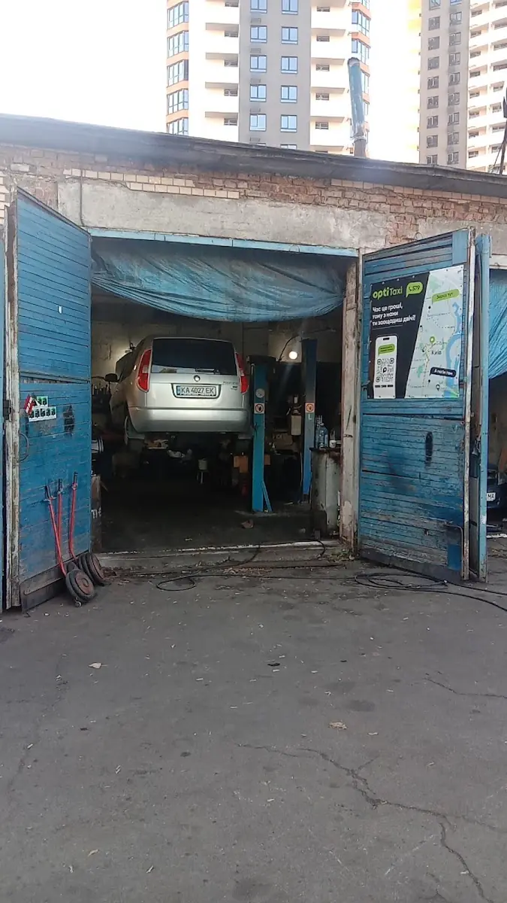
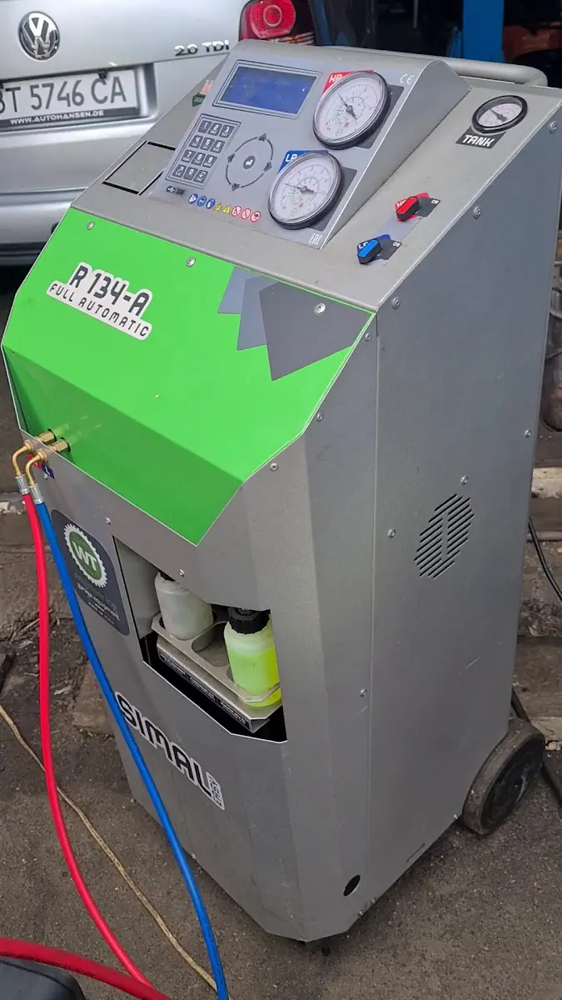
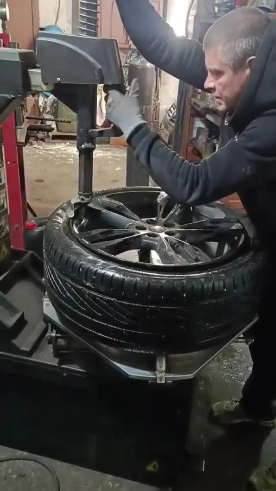
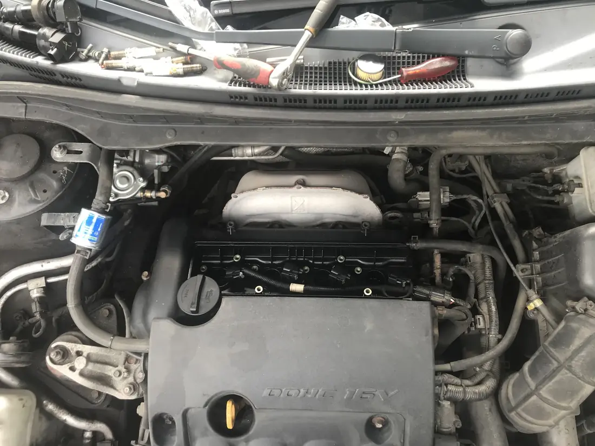
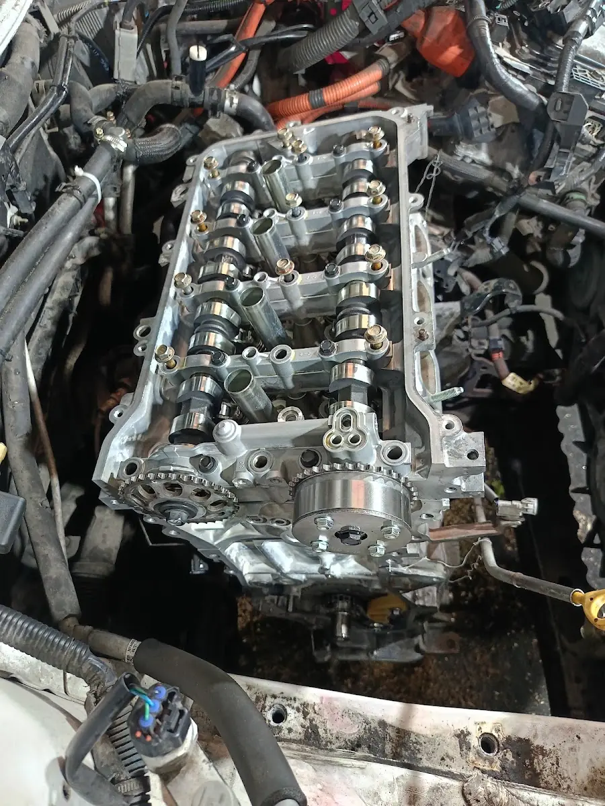

Шиномонтаж, кондиціонери й ремонт авто на Троєщині
Сезонна заміна шин, заправка автокондиціонерів, ремонт ходової, двигуна, турбін і автоелектрика. Пояснюємо, що зламалося, і погоджуємо роботу до початку.
★★★★★4,9 · 49 відгуків у Google Шиномонтаж
Шиномонтаж Кондиціонери
Кондиціонери Послуги СТО
Послуги СТОЩо ми робимо
Натисніть на послугу — розповімо, що саме входить у роботу.
Вартість залежить від авто й обсягу робіт — назвемо по телефону або після діагностики, до початку ремонту.
Наш підхід: чесність і відкритість
Нас обирають сусіди й повертаються щосезону.
- Досвідчені майстри
Знаємо більшість марок — від японців до німців.
- Гарантія на роботу
Якщо щось не так — переробимо безкоштовно.
- Чесно й зрозуміло
Пояснюємо, що зламалося, і погоджуємо роботу до початку.
- Щодня
Без вихідних: Пн–Пт до 18:00, Сб–Нд до 17:00.
СТО і шиномонтаж на Кибальчича, 1
Невеликий сервіс біля дому: шиномонтаж, автокондиціонери й ремонт авто в одному місці. Сині ворота з написом «Шиномонтаж · СТО» — заїжджайте.
Поки чекаєте авто — є кава. Якщо не знаєте, що саме зламалося, опишіть симптоми по телефону — підкажемо, з чого почати.







Що кажуть клієнти
Справжні відгуки з Google-картки сервісу.
Ремонтувалися два рази на цьому СТО. Були дуже задоволені) Наталія дуже ввічливо і все зрозуміло пояснила, порекомендували і проконсультували як зробити краще. Майстер дуже чуйна і талановита людина! Подивився все до дрібниць. Будемо ремонтуватися й надалі)
Доброго дня.РЕКОМЕНДУЮ!!!Дякую Вам за роботу.Приємно, коли приїжджає на СТО і є відчуття що Тобі дійсно хочуть відремонтувати машину,а не розвести на "бабло" )).
Заїхав на СТО-зробили діагностику авто,заправили кондиціонер,зробили шиномонтаж,ремонт розвал сходження.
Тут працюють професіонали! Швидко, компетентно роз'яснюють та консультують. Лишнього не нав'язують. Самі замовили запчастини, все відремонтували. Чемні та вічливі. Ціни адекватні. Мені сподобалось) Рекомендую.
Все сподобалося, зробив діагностику авто, виявили не справність! Фахівець підібрав та замовив запчастини! Дуже хороші фахівці, які знають свою справу. Головне швидко та оперативно. Дізнався про зберігання сезонних шин! Це великий плюс! Буду СТО рекомендувати друзям
СТО та шиномонтаж супер, майстри знають свою роботу на 100%, якісно, не дорого та результативно. Та поки очікуєте на ремонт автомобіля, то вас пригостять запашною кавою)))
Приїжджайте або телефонуйте
- 067 716 80 89
- Київ, вул. Миколи Кибальчича, 1
- Пн–Пт 09:00–18:00
Сб 09:00–17:00 · Нд 10:00–17:00